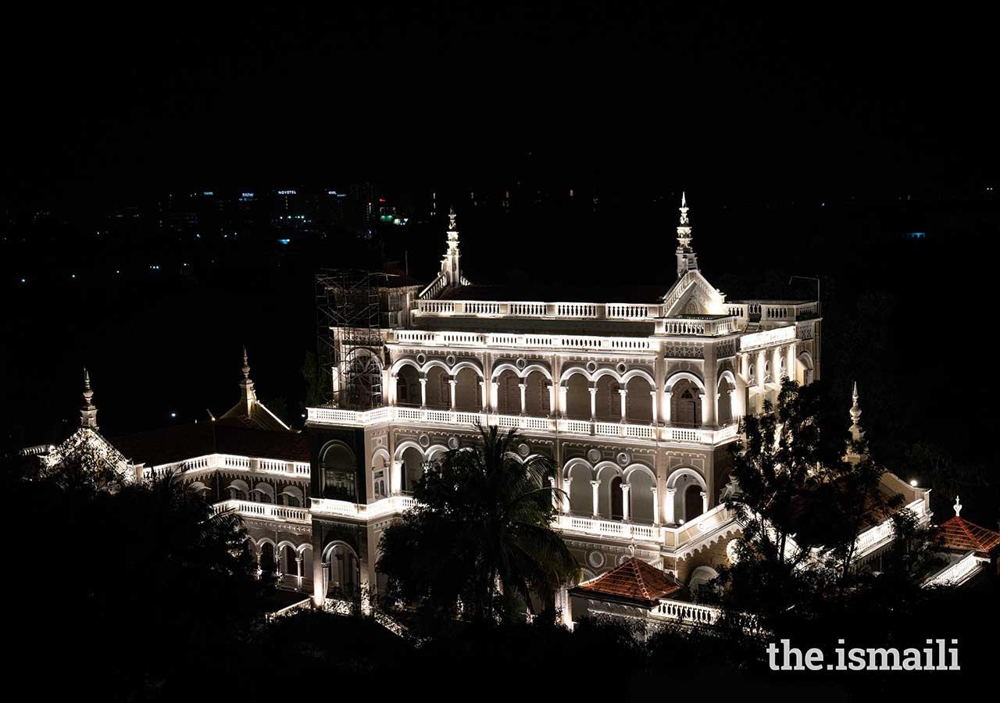
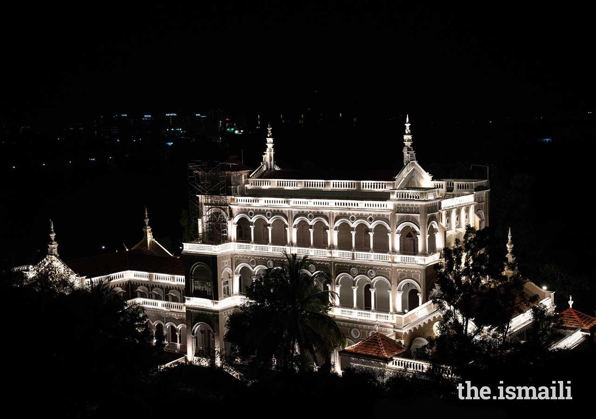

Aga Khan Palace
 


Category: Historical Place
About Place:
Agakhan Palace is one of the most beautiful architectural monuments you'll find in Pune. Constructed in 1892, this white building stands tall amidst the greenery. The palace was built by Sultan Muhammed Shah Aga Khan III in act of charity to help the poor people living in the neighborhood of people who were hit severely by famine. Agakhan Palace is also a monument of national importance as it served as a prison for freedom fighters Mahatma Gandhi, Kasturba Gandhi, Sarojini Naidu & Mahadev Desai.It takes around an hour to take a tour of the palace.

Season to visit: Anytime.
Preferred time: 9:00 AM to 5:30 PM, 7 days a week.
Type : Family, Friends
Famous For :
a)Belongings of Mahatma Gandhi & Kasturba Gandhi
b)Gandhi's ashes
c) Beautiful garden & lawn around this palace.
d)Photos & paintings that give you a glimpse of Gandhi's life.
Author : Siddhant Sonawane